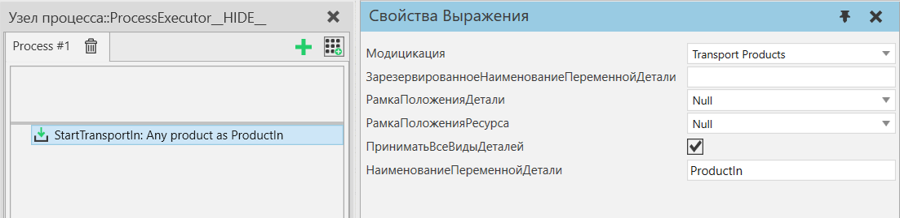

|
Оператор Начать транспортировку в позволяет начать перенос одного или нескольких экземпляров продуктов в процесс и выполнять другие операторы, пока это выполняется. Этот оператор обычно используется перед оператором Ждать Транспорт с любым количеством других операторов между ними.

Дополнительную информацию см. в операторе Транспорт В.
В режиме Transport Products все транспорты продукта начнутся одновременно.
В режиме Process an Assembly операции выполняются в том же порядке, что и в операторе Транспорт В.
Свойства
Название
|
Описание
|
Модификация
|
Определяет, как продукты транспортируются.
Transport Products - В этом режиме этот оператор переносит экземпляры продукта между процессами.
Подсказка: Экземпляр продукта — это общий термин, который включает в себя как экземпляры деталей, так и экземпляры сборок, поэтому его можно использовать для включения в процесс сборок (частично собранных или полностью собранных).
Process an Assembly - В этом режиме этот оператор используется для переноса экземпляров продукта в экземпляр сборки, который находится в этом процессе.
|
НаименованиеПеременнойСборки
|
Наименование переменной экземпляра сборки, которая получит экземпляр(ы) продукта. Обрабатывается только один экземпляр - тип этой переменной может быть списком, но в этом случае список может содержать только один элемент.
Если оставить пустым, будет создан новый экземпляр сборки.
|
НаименованиеПеременнойПорядкаСборки
|
Наименование переменной AssemblyOrder, определяющей, какие слоты сборки будут заполнены, если они в данный момент пусты.
Подсказка: Используйте оператор GetAssembly для создания AssemblyOrder.
Если оставить пустым, все слоты сборки будут заполнены.
|
ЗарезервированноеНаименованиеПеременнойДетали
|
Наименование переменной продукта, определенное в отчете о резервах. Переменная может быть списком.
Если режим установлен на Транспортные продукты и эта переменная не пуста, этот оператор будет передавать продукты в переменной без учета настроек фильтра продуктов в этом операторе.
Если режим установлен на Обработка сборки и эта переменная не пуста, этот оператор попытается использовать продукт(ы) в переменной для заполнения слотов в сборке с учетом настроек фильтра продуктов в слотах сборки.
|
НаименованиеПеременнойДетали
|
Наименование переменной, в которой этот оператор хранит либо продукт, который был перенесен, либо сборку, которая была перенесена или создана.
Если переменная с заданным именем не существует, она будет создана. Если он существует и является списком, этот оператор будет добавлен к этому списку. Если переменная существует и уже имеет значение, то перед добавлением переменная будет преобразована в список.
|
РамкаПоложенияДетали
|
Расположение системы координат, где размещаются продукты.
|
РамкаПоложенияРесурса
|
Расположение системы координат, куда будет перемещаться ресурс при размещении продукта.
|
ПриниматьВсеВидыДеталей
|
Если выбрано, принимается любой продукт.
|
ПринятыеГруппыПроцессов
|
Разрешает только выбранные группы потоков.
|
ПринятыеВидыДеталей
|
Разрешает только выбранные типы продуктов.
|
|